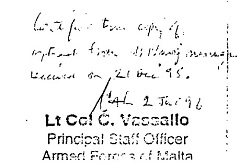
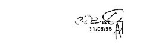
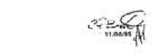

Aviation Incident Inquiry
Chairman : Dr. Philip Sciberras LL.D.
| Members : | Captain Franz Sturmeir P |
| Mr Louis Giordimaina |
Date: 2nd July 1996
of Major Robert Buttigieg under oath.
Dr. Borg Barthet : What is your work capacity?
Maj. R. Buttigieg : My name is Robert Buttigieg and I work as an Assistant Senior Air Traffic Controller at Luqa Airport.
Dr. Borg Barthet : Have you been asked by anybody to transcribe any tapes of communications received at Luqa tower?
Maj. R. Buttigieg : Yes I was by Major Fenech who is the Senior Air Traffic Control Officer asked me to do the transcripts of particular tapes relevant to 9 Hotel Alpha Bravo Uniform.
Dr. Borg Barthet : And you signed those transcripts?
Maj. R. Buttigieg : Yes I did.
Dr. Borg Barthet : And you swear that they are an exact transcript of the tapes?
Maj. R. Buttigieg : Yes I do.
Dr. Borg Barthet : Are these the transcripts LF1 and LF2, are they the ones carried out by you please?
Maj. R. Buttigieg : Yes they are.
Dr. Borg Barthet : Can you confirm that they are a true transcription of what was in the tape?
Maj. R. Buttigieg : Yes I do.
Chairman : Can you please specify what are does transcripts please?
Maj. R. Buttigieg : They are exactly what they state. These were taken from the tape recorders which are held and which are run twenty four hours a day at the air traffic control centre at Luqa and they are the transcripts relevant, starting at 0442 until 0730 in this particular case and similarly what ever was said on that particular channel from 0348 until 0952.
Chairman : There are incoming and outgoing messages?
Maj. R. Buttigieg : Whatever was said on that particular channel, yes.
Dr. Borg Barthet : Are the tapes still available at Luqa?
Maj. R. Buttigieg : Yes they are.
Dr. Borg Barthet : Are there any other tapes besides those which you have transcribed relevant to the incident existent at Luqa?
Maj. R. Buttigieg : The tapes which are relevant for that particular period are still held in the office.
Dr. Borg Barthet : But are there still any other tapes besides those which you have transcribed?
Maj. R. Buttigieg : These are not the whole transcripts for a 24 hour real. Obviously they are from the time stated in the transcript.
Dr. Borg Barthet : There aren't any other tapes besides those?
Maj. R. Buttigieg : No.
Capt. F. Sturmeir : The outbound flight of this particular flight of the night before, are the transcripts still available? Not the return flight, the Malta to Djerba of the night of the 2nd
Maj. R. Buttigieg : The tapes run from a specified time till a specified time, they cover twenty four hours, l do not know whether in this case it covers the flight of the previous day or not, that is something the technicians will definitely know.
Chairman : Can you check whether they are still available?
Maj. R. Buttigieg : Yes I can.
Chairman : And if they are available you can always pass on the message to Attorney General's office?
Maj. R. Buttigieg : Will do.
Chairman : Thank you very much.
Evidence of Mr. J. Sultana: under oath.Capt. F. Sturmeir : Did Mr Bartolo ever apply for a local licence?
Mr. J. Sultana : That is a flying licence, a pilot's licence, he applied but it was never processed because he still had to get further qualifications from abroad and he never followed it up. He eventually obtained a commercial pilot's licence and even an instrument rating but he never followed the rest up.
Capt. F. Sturmeir : I would like to see the correspondence from Mr Bartolo or Exelair applying for local licences if there was any such correspondence and your reply and what year or date it was.
Mr. J. Sultana : I can get you a copy later if it exists because I do not seeing a reply from us if I remember correctly
Capt. F. Sturmeir : I understand that under you ENO you can apply for any licence that is TPL, CPL, or ATPL under certain conditions maybe you have a flight channel test then you issue a licence.
Mr. J. Sultana : But that is only for the issue of a Maltese commercial all airline transport private licence or ease a validation of a foreign commercial or airline transport pilot licence.
Capt. F. Sturmeir : So you are saying that no private pilot licence holder inMalta?
Mr. J. Sultana : No not issued by Malta, no.
Capt. F. Sturmeir : But it is part of the ENO?
Mr. J. Sultana : It is. Under the ENO we can issue a private pilot's licence but the ENO also contains the provision whereby private pilot's licence issued ICAO states are automatically regularised as valid in Malta and you just fly on the bases of that licence.
Capt. F. Sturmeir : But it is not controlled by you?
Mr. J. Sultana : Controlled in what sense?
Capt. F. Sturmeir : And audited, because we had to ask from the United States for the licence of Mr Bartolo because you have no references what so ever what these people are doing out there?
Mr. J. Sultana : No. We do not control them we leave it up to them and to the owner of the aircraft.
Capt. F. Sturmeir : So all the pilots which fly around the Maltese Islands have no knowledge of the local law of anything like that?
Mr. J. Sultana : No. They should get a knowledge because in their training it is quite normal. Because in the training as you get as a private pilot you are always going to be aware of the laws which are in force where ever you are. So if you go toFrance you are aware of the law which are applicable to France.
Capt. F. Sturmeir : Are you saying I am allowed to fly with my CPL licence inFrance, a local registered aeroplane or do I have to sit for a test, PLO entry channel flying test?
Mr. J. Sultana : I do not know what they apply inFrance.
Capt. F. Sturmeir : Because in most states in the world you are not allowed to fly in a foreign licence. You have a validation or an issue of a licence.
Mr. J. Sultana : I am saying and I have said last time that in Malta ever since we had the first aircraft registered here which was a light aircraft the policy had always been that a person who has got a private pilot licence need not carry out any examinations or produce his licence to the department.
Capt. F. Sturmeir : Mr Bartolo had a CPL licence?
Mr. J. Sultana : That is what we are informed of by the United States Civil Aviation.
Capt. F. Sturmeir : So you are not aware that he had a CPL licence?
Mr. J. Sultana : Probably verbally at some stage someone in the Department and perhaps even I may have got to know that he got a licence. I knew that he was travelling to and fro between Malta and the United States to obtain a commercial licence and he even had, I know because I spoke to him, that one stage sometime in September he was thinking of changing some aircraft of Exelair and he intended to get a licence on me new aircraft he was using, but that is all I know, I never saw anything.
Capt. F. Sturmeir : In the first year you mentioned that you sent a letter to the police informing him that he may carry passengers for hire and reward, I would like to see that letter. Also if he would have held a local licence, a Maltese licence you would have had the power to reduce him from flying or to suspend his licence, isn't that? You wouldn't have written to the police you would have just taken his literature away of flying an aircraft here.
Mr. J. Sultana : No. First of all the correspondence which was exchanged with the police has been sent to the Attorney General so and l think last time it was stated that it is up to the Attorney general that can be produced to the board or anyone ease, we can produce it. I do not have here. Then I will copy of the same correspondence which I sent to the Attorney General's office last time. All I can say is that at that stage we, as a department, we wanted the Police to investigate. To investigate what to ask passengers whether they where carried for compensation and we felt that it was not something which we could do ourselves and it was a police matter and that is why we asked the police.
Capt. F. Sturmeir : So you say you have no record keeping of channel aviation DMO?
Mr. J. Sultana : Non what so ever and we never had.
Capt. F. Sturmeir : Don't you think that that is a limitation of a channel aviation community.
Mr. J. Sultana : Limitation in what sense?
Capt. F. Sturmeir : They are not free to fly, don't you think they would be in a better position if there is authority to put over them?
Mr. J. Sultana : I don't suppose that they are more free to fly then they are today. Their licence is automatically recognised under our own law and they need not produce anything else. If you say that the department should know who is flying and who is not than that is a way of keeping control of who is flying and who is not.
Capt. F. Sturmeir : So you do not know if their licence expired or if their medical is valid, you have no records?
Mr. J. Sultana : That is a pilot's responsibility and we have stressed this with everyone including airlines who are under our control. That it is the pilot's responsibility to see that his licence is valid in every respect. Even in the case of licences that we issue although for example in the case of the crew who are issued with commercial or airline transport private licence, we do keep an eye on the status of those licences. We do not except the responsibility to ensure that all licences are valid, that is always the responsibility of the pilot.
Capt. F. Sturmeir : And the standard of the pilot, how do you monitor that in the channel aviation?
Mr. J. Sultana : As I said the standard is maintained by a way of the licence itself. In the case of the American licence pilots they have to undergo a check every two years, it is up to the pilot to do that check.
Capt. F. Sturmeir : But there is no authority over that there is nobody?
Mr. J. Sultana : We do not oversee it no.
Chairman : Do you mean to state that not the states any of the departments concerned to see that a pilot is medically fit, is it no concern of the state?
Mr. J. Sultana : What we say is that here we have a small number of aircraft, maybe four or five and in order to fly you have to have access to these aircrafts and it is also the owners responsibility, apart from the pilots to see that the pilot to whom access is given is proper licensed. So in a way we let that controller be done by the owner himself who had got all the interest as well.
Chairman : OK. The owner would control his pilot, but how would you control the owners.
Mr. J. Sultana : Not his pilots, the use of his aircraft, because he has got full interest in it. This is the way that we have always have
Dr. E. Mizzi : Do the police check every day that every person on the road has a licence, it is only when an accident occurs the police check if that person has or has not a licence. Is it possible for you to check if any pilot who is flying an aircraft is medically fit or not every time he flies, is it possible to do that. Its not done anywhere ease and you do not expect it to be done in Malta.
Capt. F. Sturmeir : I would not like you to correct there Dr. Mizzi. In most countries all over the world no pilot is allowed to fly unless he has the local validation or a licence.
Dr. E. Mizzi : That is another matter. But no state in the world, a country in the world checks that every pilot every time he flies has a valid licence.
Capt. F. Sturmeir : Not every time but records have been kept or recorded if his license has been renewed.
Mr. J. Sultana : We keep the records for the licences that we issue, that I can assure you because we are responsible for it.
Capt. F. Sturmeir : But you have other dozens of pilots that do not have a licence and they are not being controlled. There is no authority over them.
Mr. J. Sultana : They have a foreign licence.
Capt. F. Sturmeir : They have a foreign licence, it doesn't matter but how do you control that, an American licence which is issued in a state.
Dr. E. Mizzi : But that is the state of the law.
Capt. F. Sturmeir : No the state of the law it does give you the privilege to have a local licence
Dr. E. Mizzi : Our law does not require that and that is the state of the law.
Capt. F. Sturmeir : It is very confusing this licence issue, I have to go into that because I do not understand how people can fly without the proper documentation authorities.
Mr. J. Sultana : They have proper documentation, they have
Capt. F. Sturmeir : You had to send to the United States for his licence and his medical. Anybody can come in here today and fly.
Mr. J. Sultana : If the pilot normally carries his licence with him and if he has gone missing, how can I contact the pilot and ask for his licence.
Capt. F. Sturmeir : I have one more question I have looked at the certificate of air worthiness and it says it forms part of the flight manual. An operations manual.
Mr. J. Sultana : I am producing here a copy of the pilot's operating handbook. This is for that aircraft.
Chairman : Exhibit DOK. JS
Capt. F. Sturmieir : Are there any pilots on the Maltese islands who have a local PPO?
Mr. J. Sultana : None.
Dr. Farrugia : Since the accident have you required local pilots to provide you with copies of their licences?
Mr. J. Sultana : No.
Dr. M Pace : Sultana you mentioned that the application by Mr Bartolo to obtain a licence locally was not processed amongst the reasons you mentioned, you also mentioned that you were not sure what qualifications or that he was waiting for some qualifications, you also stated earlier that he had a private pilot's licence and he also had a commercial pilot's licence so could you please clarify and explain what other qualifications you were waiting for?
Mr. J. Sultana : Initially Mr Bartolo had a private pilot licence. I do not remember exactly when the application that he filed with the Department for the issue of a validation, when it was dated I can provide it later on but it appears and from my recollection, there was nothing in the file that the application was processed, which means that for the purpose of validating a foreign commercial pilot licence we lacked some information, probably the commercial pilot license itself and that was why it was never processed. I know that in 1995 from information that I hear and which at one stage talking to Mr Bartolo himself he stated, he has in 1995 obtained the commercial if not in late 1994 and he carried out some further training in 1995 to get the instrument rating. Basically this is it and I think it is confirmed by the dates of the records on licensing that we obtained from the FAA.
Dr. M. Pace : On the strength of that information do I take it therefore that Mr Bartolo was qualified, he would have qualified to obtain the local licence.
Mr. J. Sultana : On the strength of the qualifications that Mr Bartolo had obtained from the United States using obviously the same procedure as would have been applied to other pilots he would have in order to have that validation, that licence validated, he would have had to undergo a Maltese medical even though he had a valid medical certificate for the purposes of the FAA, he still would have had to undergo a Maltese medical and he would have been required to undergo a qualification check with a Department examiner. Normally we bring the Department flight examiners, these are brought fromFrance.
Dr. M. Pace : I understand that for many years there has been an expert, medical practitioner assigned to the Civil Aviation Department, with an office at the Civil Aviation Department and such medical practitioner has been carrying out medicals on pilots for years. Is this so?
Mr. J. Sultana : Yes I confirm that that is correct. I presume that you are referring to Dr. Alfred Bonnici who is the Chairman of the medical board. I would also like to say that both Dr. Bonnici as well as a couple of other doctors on the island who are authorised by the Department to issue medical certificates are also have authorisation to do so from theUnited Statesand in the case of Dr. Bonnici from some other country. It is most likely that a medical certificate issued by theU.S.would be done on the bases of an examination by one of these local examiners who would I also eventually issue a Maltese certificate.
Dr. M. Pace : Is Dr. George Vella recognised by your Department as a medical examiner?
Mr. J. Sultana : He is an authorised qualified medical examiner and he is also to my knowledge authorised by theU.K. and the United States Civil Aviation Authorities so as I said it could be possible for a pilot to be examined for two different licences from the medical aspect by the same medical doctor.
Dr. M. Pace : Are you aware that in fact Mr Bartolo was medically examined by Dr. George Vella about a month before the incident, would you have any record?
Mr. J. Sultana : ; No because in that case he was examined for the purpose of theUnited States licence and he would send the medical report to the United States Authorities. All I remember is that you mentioned it yourself earlier.
Dr. M. Pace : So do l take it that the procedure for medical examination is totally alien to your authority, in the sense there is a medical practitioner at the Civil Aviation Department available to examine pilots, in actual fact you never engage directly or instruct any medical practitioner to examine a pilot. Is it up to the pilot himself or the owner of the aircraft to take this?
Mr. J. Sultana : First of all the medical examiners that are authorised by the Department and I am here referring to Dr. Bonnici, Dr. Vella and some others, they are authorised to carry out medical examinations and issue medical certificates under our authorisation, the department's authorisation for the purposes of Maltese Licensing only. They also happen to be authorised the same people by the authorities of the United States and also in some instances United Kingdom to carry out the same things, that is examine and issue medical certificates for the United State and the U,K. licensing authorities. Now whilst we have authority to ask if we have some doubts on a Maltese licence holder we have the authority to ask our medical examiners to look into something in particular, we do not have the same authority in respect of foreign licences because that is not under our jurisdiction.
Chairman : So it must always be a Maltese licence holder'?
Mr. J. Sultana : Yes just like a Maltese authorised medical examiner I cannot examine and issue a medical certificates for foreign licences holders, he must be authorised by that state.
Dr. M. Pace : And how many Maltese licence holders are there?
Mr. J. Sultana : Holders of a Maltese licence I cannot tell you precisely but a guess would be in the region of a 140, this is based on my knowledge that Air Malta which is the national airline has got about a 120 pilots on its books and we have two other carriers which have got a few pilots. So in all the number of Maltese licences issued which are either commercial or ease airline transport pilots licences amount to about 140. lf you want to know the precise number I can let you know.
Dr. M. Pace : Did your department ever request Mr Bartolo to submit a copy of his medical examination certificate or did your department ever have occasion to sight it, such medical certificates of Mr Bartolo?
Mr. J. Sultana : Not as far as I recollect. As I said as far as the Department is concerned he could only fly for private purposes only and therefore there was not need to look at his medical records or look at his medical certificate. We treated him an another co-private pilot.
Dr. M. Pace: Going back to what you stated earlier regarding authority and whether you were checking whether the pilot or aircraft had the documentation in order and soon. Is the Civil Aviation Department, the Governing authority in Civil Aviation matters inMaltaor not?
Mr. J. Sultana : Can you please repeat that?
Dr. M. Pace : Is the Civil Aviation Department as regards Civil Aviation matters the governing controlling authority or not?
Mr. J. Sultana : The Department of Civil Aviation is the governing authority in regard to licensing as far as the licences it issues are concerned we are not the governing authority for licences issued by U.K. or France.
Dr. M. Pace : As regard matters of Civil Aviation inMalta generally, in other words whose competence is it generally inMalta for Civil Aviation matters to verify to check to inspect.
Mr. J. Sultana : In general for civil aviation fall under the civil aviation department
Dr. E. Mizzi : (microphone out of reach)
Mr. J. Sultana : Of course.
Dr. E. Mizzi : (microphone out of reach) they are limited
Mr. J. Sultana : Of course. J
Dr. T. Farrugia : Could you confirm for the benefit of the Tribunal the owner of record of this aircraft?
Mr. J. Sultana : The owner of the aircraft is Sun Aviation Limited.
Dr. T. Farrugia : Do you know whether this company owns other aircraft?
Mr. J. Sultana : No the company owns just this one aircraft.
Dr. T. Farrugia : Do you know whether this aircraft was being operated by Sun Aviation or whether it was operated by another company?
Mr. J. Sultana : I am not able to reply to that although I can say that at one stage when the Department saw an advert in the local papers to the effect that the aircraft was being advertised as being available or possibly being made available by Exelair Limited, the Department wrote to Mr Bartolo and we asked him eliminate all reference to the aircraft in that advert for that company and even the aircraft itself which at one time had the same logo as the other company we asked Mr Bartolo to remove that logo as well.
Dr. T. Farrugia : Was this advert in terms of having the aircraft being made available for air taxi services or something like that?
Mr. J. Sultana : That's correct.
Dr. T. Farrugia : Which are services against payment, I would imagine?
Mr. J. Sultana : That's correct.
Dr. T. Farrugia : Would it be possible for you to present a copy of this letter that was sent to him?
Mr. J. Sultana : Yes I can present it later on to the Tribunal.
Dr. T. Farrugia : And it was sent to Sun Aviation and not to Exelair?
Mr. J. Sultana : It was sent to Carmel Bartolo as Managing Director, if I remember of Sun Aviation.
Dr. T. Farrugia : To your knowledge Exelair and Sun Aviation are associated companies?
Mr. J. Sultana : I wouldn't say associated companies, they were presumably owned and run by the same person so that is the association.
Dr. T. Farrugia : And Exelair is a company that does on a regular basis provide air taxi services?
Mr. J. Sultana : Exelair was licensed and authorised by the Department to operate Air Taxi Services.
Dr. T. Farrugia : I know that in one of the last recent sittings there were some questions and answers as to whether this was a private flight or a public flight, etc. Can we take it that there is really no way of knowing whether this particular flight on the night in question was actually a private flight or whether it was a flight which would normally come under the public transport, is there?
Mr. J. Sultana : The only way that you can know about it I suppose is for the persons on board would be the only ones capable of answering that question.
Dr. T. Farrugia : So you can only presume that this was a private flight because of the fact that Sun Aviation or the licence holder, that is the pilot, were not duly licensed to carry passengers on a commercial basis. You are presuming that this was a private flight?
Mr. J. Sultana : I am not presuming anything.
Dr. T. Farrugia : I understood that from one of the answers that you gave in a previous sitting you were presuming that this was a private flight because of the fact that the company or the pilot were not authorised or licensed to carry passengers as a commercial concern.
Mr. J. Sultana : I do not presume a flight to be a private flight just because of that, so much so, that last year the Department asked the police to investigate flights with this aircraft, obviously because we could not presume whether the flights carried out were private flights. Evidently we had doubts and we asked the police to investigate.
Dr. T. Farrugia : So would you consider it reasonable to assume that this was a commercial flight?
Mr. J. Sultana : I cannot answer that question. I do not know.
Chairman : Are you in a position to exhibit all the correspondence between Sun Aviation and Exelair and your Department?
Mr. J. Sultana : On what?
Chairman : Since inception of the company since its registration.
Mr. J. Sultana : This depends on the Department I am not in a position to answer.
Chairman : Is there a bunch of correspondence? This would normally deal with what your department?
Mr. J. Sultana : About the issue of licences.
Chairman : That is what we are requesting, copies of exchange of correspondence Excelair, Sun Aviation and your Department if any.
Mr. J. Sultana : We can produce the files and then you can decide to see whatever is of interest to the Tribunal.
Chairman : All we are requesting is to see what sort of licences did Mr Bartolo ....just one question Mr Sultana. Under the existing laws what controls if any did your department have on holders of pilot licences obtained from other jurisdictions?
Mr. J. Sultana : As I said in the case of Exelair, before the pilots of Exelair were released or were issued with a validation they were made to undergo the Maltese law exam and they also underwent a flight test by a Department examiner.
Chairman : I asked what controls does the department have over a pilot who has a licence from another jurisdiction, under our existing laws?
Mr. J. Sultana : In the case of a foreign licence holder pilot we can even stop him from flying and we have done so in the case of one person whom we considered to have breached the law.
Dr. E. Mizzi : What procedure did you follow?
Mr. J. Sultana : In this particular case that I am mentioning the pilot concerned was involved in a incident and on investigation it was determined that he might have breached the law for the time of investigation the pilot was suspended from flying and afterwards he flew on one occasion floating the department's suspension and he was then withheld from flying completely. He was banned from flying and we even informed the federal Aviation Administration of the incident.
Chairman : You informed the jurisdiction that issued his licence?
Mr. J. Sultana : Yes of the action that we had taken.
Dr. E. Mizzi : In this particular case at what stage did you have suspicions.
Mr. J. Sultana : During the investigations that we carried out into the incident, the investigations were carried out by myself and another department official from the statements that, we obtained from the pilot and also the passengers it was likely that there was a breach of laws and up to that time the pilot was suspended. We then took up the matter with the Attorney General to see whether we should proceed or not, whether we had a case or not and the pilot remained suspended. During that period of suspension the pilot concerned flew not withstand him knowing that he was still barred from flying by the Department and then the Department issued a letter to this pilot telling him that he was absolutely, forbidden not to fly all Maltese aircraft until further notice and that he was going to be reported also to the Federal Aviation Administration.
Dr. E. Mizzi : In the case of the aircraft in question, I understand you had suspicion whether payment was being made to carry passengers, what steps did you take'?
Mr. J. Sultana : The Department wrote to the pilot.
Chairman : Was there an internal enquiry?
Mr. J. Sultana : No. Because we felt that if I were to go or anyone from the Department were to go to a passenger and ask him whether he received any payment not being an authorised investigator like the police he could have replied, go and get stuffed, so.
Chairman : When was that'?
Mr. J. Sultana : This was in June of last year that we started the procedure with the police.
Chairman : Did you have a come back from the police?
Mr. J. Sultana : We initially had a come back, incidentally when we started this investigation with the police l asked them also to check a couple of other aircraft which had also carried out some foreign flights. l think round about September they came back with a list simply submitting a list of passengers who had flown on these flights and after February or March of this year they came back with a report after having carried out further investigations, I also talked to the passengers. I had supplied them as well with a questionnaire that they could use as part of their investigation and they used that questionnaire. Perhaps it was not complete in all details but it was never the less a good help in assistance for them to carry out the investigations, but although this questionnaire was supplied some time in September of last year they only came back with an initial report and a final report in March. These reports were eventually as I stated last time submitted to the Attorney General to see whether we could proceed in any way legally.
Chairman : What was the result of that'?
Mr. J. Sultana : The result was that some passengers who were contacted on these flights toCatania, Djerba or whatever, they had paid money for carriage and since compensation was carried the flight could be turned as commercial flights.
Dr. E. Mizzi : Earlier you were asked whether this flight was or was not a private flight and you said you couldn't say but on the flight does the pilot say whether it is a private flight or public flight.
Mr. J. Sultana : If I remember the flight plan states that it is a private flight.
Dr. E. Mizzi : And the pilot normally does say whether or not?
Mr. J. Sultana : Yes.
Dr. E. Mizzi: The flights by this aircraft were all indicated as private flights?
Mr. J. Sultana : I cannot answer that because one has to see all the documentation.
Dr. E. Mizzi : From the ones you have seen?
Mr. J. Sultana : I think that there is another flight which we have a flight plan for and which was marked private.
Dr. E. Mizzi : If flights were marked public and it was flown by Mr Bartolo what would you have done?
Mr. J. Sultana : That would pose a bit of a problem, because we are talking about a document, a flight plan, which is used for air traffic control purposes. So the people who see the document are not really interested in whether the flight is public of private it does not matter at all for traffic control purposes. Because the purpose of the flight plan is to convey information to the people who provide assistance during the flight to the aircraft on the route that is to be taken, the altitude etc.
Dr. E. Mizzi : Is there no other record of the flight is a public flight or private?
Mr. J. Sultana : No not as far as l know.
Dr. T. Farrugia : To your knowledge was the aircraft being used on a regular basis?
Mr. J. Sultana : I was never aware as to how much it was used. I used to see the aircraft occasionally flying, I cannot say how much it was used.
Dr. T. Farrugia : But is there any record?
Mr. J. Sultana : Yes there would be.
Dr. T. Farrugia : Would these be accessible to you normally?
Mr. J. Sultana : For what purpose.
Dr. T. Farrugia : Basically what we want to find out is whether this aircraft was being used regularly and whether on these regular flights whether it always had passengers on board or whether this aircraft was being used on a regular basis for the pilot on his own, that is all we want to know.
Mr. J. Sultana : What I say is that the Department in another section which looks after the accounts section, so it looks after the payment of landing charges and passenger service sub charge, they would have record of the exact dates of flight and l think we should also have something about the passengers as well, but l am not certain.
Dr. T. Farrugia : Mr Chairman I wonder if we could have a record of this?
Chairman : Yes if you have records you will produce them.
Dr. T. Farrugia : Maybe not all the documentation but maybe a resume prepared by the Department as to the.
Chairman : Captain Sturmeir is reminding me that we did request the documentation in the first session already.
Capt. F. Sturmeir : In the first session we asked for the flight plans of the last four weeks before the incident of this particular aircraft in question.
Dr. T. Farrugia : Perhaps you can do that by the next session?
Mr. J. Sultana : Yes. That same information could be obtained from the accounts records were they list every flight.
Chairman : It makes no difference from were it is obtained as long as they are exhibited.
Capt. F. Sturmeir : Did anybody ease fly this particular aircraft?
Mr. J. Sultana : Emmm.
Capt. F. Sturmeir : From the flight plan you have everything, the passengers, the pilot in command.
Mr. J. Sultana : Either from the flight plan or from another document we will get them.
Dr. M. Pace : Do we go back four weeks or do we go to the last major check?
Capt. J. Sturmeir : Was there a major check?
Mr. J. Sultana : The last inspection of the aircraft was carried out on the 13th or 14th of September.
Capt. F. Sturmeir : While we are talking about the check, it was a piper lance correct?
Mr. J. Sultana : Yes.
Capt. F. Sturmeir : Was the manufacturer ever contacted that we lost an aeroplane here?
Mr. J. Sultana : No it is not normal procedure with light aircraft. It is unlike big transports.
Capt. F. Sturmeir : Don't you think that a manufacturer should know that there is an aircraft missing is of structural failure, not that we have any evidence.
Mr. J. Sultana : One it is not normal for the manufacturer to be contacted and secondly all you can say at this stage of the aircraft is that it has gone missing, you cannot say anything ease. The manufacturer as you are saying would only be interested if there was structural failure, if it is proved that there was structural failure OK. if you have evidence for that you would go perhaps to the manufacturer and so inform him.
Capt. F. Sturmeir : We also asked for the log pages last time, I think, that would also give us how well updated the air log books because that would also give you the same as the flight plan, I mean if flights were carried out since the last check.
Mr. J. Sultana : I have here the maintenance logs which I impounded way back in December. These are maintenance records and the work sheets of recorders which the maintenance organisation looking after the aircraft had in their care and here you will find all the records for the inspection ever carried out on the aircraft up to the 13th, which was the last in question.
Capt. F. Sturmeir : Does it include the log books of the aircraft?
Mr. J. Sultana : This is only the maintenance log I have. I have asked NCA and they never had the log books in their care so I presume that they would be under the care of the owner of the aircraft and we have sent a fax to the owner of the aircraft but we never had a reply as to the provision on logs so I cannot say.
Dr. M. Pace : I wasn't quite following which documents are required, which ones are they
Mr. J. Sultana : There are log books as required by the air navigation order which contain the record of the flights undertaken on various dates and running total of the flights taken. Normally one would expect also maintenance to be recorded on those log books. In this particular case the department had accepted that the maintenance records be in the, what is called the adlof system, which is an American system of having maintenance records. So for all intents and purposes this should be complemented by the log books as required by the law. For maintenance purposes and the renewal of the C of A it contains all the information necessary.
Chairman : Yes but who would have the log books?
Mr. J. Sultana : The owner of the company.
Capt. F. Sturmeir : What he is saying is you took exception from air law in respect to this aircraft in respect of maintenance.
Mr. J. Sultana : No even in the case of a large company like AirMalta where the records would be very much more substantial in volume it is permissible to have complementary documents so you would recall all the information on maintenance in those documents rather than the log books. Now this is the original, it actually belongs to the owner of the aircraft and it was under the care of the maintenance organisation.
Dr. M. Pace : This is what am coming to Mr Sultana, because you stated earlier and you confirmed that actually NCA were the maintenance people.
Chairman : Are you exhibiting those
Mr. J. Sultana : These are the originals they are not the Departments property so they are animo ritirandi.
Chairman : By law they have to be originals, we are tolerating that they are only photocopies, lets exhibit those originals they will be under lock and key here.
Mr. J. Sultana : So you have the work sheets and the.
Dr. M. Pace : Just to clarify one item on the log books, When ever the Bureau veritas surveyors carried out an audit on the aircraft and records, surely they must have audited the airframe and engine log books.
Mr. J. Sultana : They would have audited that in fact you will find that the adlog is stamped by the POL, that is that there is all the maintenance records for the aircraft.
Dr. M. Pace : So under the air navigation order you are considering that adlog as the part of the log books.
Mr. J. Sultana : Because they are part of an adjunct to the actual log books.
Dr. M. Pace : You stated earlier in one of the previous sittings that actually NCA were the organisation entrusted and J authorised by your department to carry out maintenance on this aircraft, is that correct?
Mr. J. Sultana : Yes.
Dr. M. Pace : Am I to assume also that as regard log books referring to maintenance NCA would also keep all documentation or copies of such documentation regarding log books, concerning inspections, examinations, work required and so on.
Mr. J. Sultana : I cannot speak for NCA all I can say is that NCA as the organisation looking after the maintenance they kept the aircraft maintenance records in that form at the request of the operator and that was agreeable for us. Now whether the company, l should not think that the company required to have the log books as well because they would have asked me for them. So I cannot say.
Dr. M. Pace : Where were these documents collected by you from?
Mr. J. Sultana : We obtained them from NCA themselves.
Dr. M. Pace : As regards log books concerning flying hours and all the other relevant data is it correct to state that actually these log books are normally held on board the aircraft by the pilot?
Mr. J. Sultana : Yes I have known pilots who carry with them there personal flying log books, the actual date of entry into that place. Sometimes they might also require for sometimes they would want the authorities to, one the authorities would stamp a particular reason perhaps to ` examine the pilot's qualifications and in the case of a pilot with a United States qualification, with a US pilot licence, the competency check of the pilot would be certified in the log book itself so if a pilot with a US licence were to be asked at any airport to produce his full personal licence, apart from the small personal licence giving the personal details and also the medical certificate which is also a very small document, if the authorities also insist to see the competency he would carry it with him.
Dr. J. Pace : Now l understand also that qualifications as regards pilots and so on are very often related to the number of hours the pilot has actually flown. Can you tell us how many hours if results that Mr Bartolo had already flown?
Mr. J. Sultana : Let me explain.
Dr. J. Pace : Roughly.
Mr. J. Sultana : On the basis of the reports or records that we obtained from the FAA that Mr Bartolo had qualified for a commercial pilot I would guess that his minimum number, of hours would have been in the region of between three hundred, at least three hundred, perhaps even more, depending on the course that the pilot underwent to take the CPL.
Dr. M. Pace : And you are not aware of the number of hours more or less that Mr Bartolo had flown? Is it correct to state that he had actually flown some three thousand or five thousand hours?
Mr. J. Sultana : No I don't think, definitely not three thousand hours.
Dr. M. Pace : But not three hundred the minimum.
Mr. J. Sultana : ; I said on the basis of the minimum number of hours that you require in order to obtain a qualification.
Dr. M. Pace : How long had Mr Bartolo been flying?
Mr. J. Sultana : I think about 1990/1991.
Dr. M. Pace : And did he used to fly once a year, regularly, once a week?
Mr. J. Sultana : I do not know how much but definitely in order to get the first licence you require at least fifty hours, to get the commercial licence you need a minimum of 250 hours, now the private pilot licence he obtained way back in 1990.
Dr. M. Pace : Have you a means of checking to see how many hours he has flown.
Mr. J. Sultana : I do not know whether we have a record or not.
Dr. M. Pace : Is it fair to assume that the pilot would have been anxious to increase the number of hours like any other pilot because this is a sort of step ladder and with so many hours that you have flown you go up another step and so on, that he would have had a keen interest to ensure that the log books are duly endorsed and kept on board so that he would obtain the necessary hours?
Mr. J. Sultana : What I am saying is that normally in order to acquire the licence like the commercial licence you need at least 300 hours. Now Mr Bartolo had been flying for about five I years so it is quite likely that he had flown more than five hundred as well. But my guess would be somewhere in the region between 500 and 1000 hours.
Dr. M. Pace : So do I take it that actually once somebody has a commercial pilot's licence and is rated-on a particular aircraft he can actually fly that aircraft. Or must he have a certain minimum number of hours over and above the minimum required to obtain the CPA or whatever it is?
Mr. J. Sultana : It depends on the system that you are working with. In the case forMaltaif you are going to fly a particular aircraft the department would examine by flight check that pilot on the aircraft. lf the pilot concerned wants to fly on another aircraft, if it has the similar flight characteristics it might be possible to foregoing doing another flight.
Dr. M. Pace : So this is where you exercise your discretion you are saying.
Mr. J. Sultana : What do is normally we discuss the matter with our advisor and see what they recommend.
Dr. M. Pace : Regarding the documentation required. We have mentioned that the maintenance log books have been exhibited and NCA were the organisation responsible for maintenance. As regards the log books of the aircraft and the pilots the personal log book it also results and this tallies with information which I have that the pilot used to carry his log books with him on the aeroplane. I do not know what other documentation has been requested going back to what was asked earlier, if there is any other document required, if somebody could specify we can certainly look into it and try and obtain such documents.
Chairman : Going back on the question that Dr. Pace asked you, let us assume that he make a flight out Malta Djerba, Djerba Malta and he notes down on the log book the number of hours that he flew who would have endorsed that log book here?
Mr. J. Sultana : We do not even see it.
Chairman : So it is not endorsed by anyone?
Mr, J. Sultana : But some airports abroad sometimes they may carry out checks for some reason and it is always handy to carry it with you.
Chairman : Who would check the number of flying hours that particular pilot made. No one, he can jot down whatever?
Mr. J. Sultana : That is the case.
Dr. M. Pace : So it is just the pilot's word it is not possible to verify directly.
Mr. J. Sultana : It is basically the pilots word, particularly when a pilot is requiring to obtain a licence and therefore he wants to prove that he has actually done hours. Sometimes that pilot would request an authority who is obviously aware or has the possibility to check his records to stamp and verify.
Chairman : Has such a request ever been made to you?
Mr. J. Sultana : No not with us. If I may add although an authority I normally would have to look at the pilot's log book to see how many hours he has flown etc. the proof of the pilot's competence for the purpose of issuing the licence is not really the total number of hours that he has flown. In practice the proof is the competency check which the authority carries out before issuing the licence irrespective of the total number of hours.
Dr. M. Pace : You mentioned that a pilot was suspended, could you mention who and when? Was Mr Bartolo suspended?
Mr. J. Sultana : No.
Dr. M. Pace : Now you also took you oath of evidence to tell the truth but the whole truth, as regards to the result of the investigation of the police and so on. You said some members, some passengers had stated that some payment and you said to whom, we will come back to that later, was affected. Is it correct to state that several other passengers stated that no payment was effected, is that correct or not? In fact most of the passengers, except for one stated that there was not payment, is that correct?
Mr. J. Sultana : No if I remember there were more people who said that payment had been effected. But you can check this because they are to be filed.
Dr. M. Pace : Was Mr Bartolo ever requested by your Department to produce a declaration from the passengers, that there were no fair paying passengers on board?
Mr. J. Sultana : At one time yes.
Dr. M. Pace : And what was the result?
Mr. J. Sultana : The result was that there was a statement, I do not remember by Mr Bartolo or the passengers themselves that payment was not effected.
Dr. M. Pace : Are you aware that there was a declaration even for this flight?
Mr. J. Sultana : No I am not aware.
Dr. M. Pace : You mentioned earlier that payment was allegedly made by a passenger to someone and you didn't want to enter into the issue of whom, to whom was payment allegedly effected? Was that to Mr Bartolo or to Sun Aviation Limited or to somebody else?
Mr. J. Sultana : That I cannot say one has to see from the files. I do not remember what the police actually wrote on the report.
Chairman : If such a document is going to be produced why don't we first examine the document and then we can put all the questions.
Dr. M. Pace : But with all due respect the witness's own reluctance to delve into that issue.
Dr. Borg Barthet : The best person who can testify about whether these companies charged people is the company records and I hope that they will be produced.
Chairman : Dr. Pace please can we wait until the documents are produced.
Dr. M. Pace : No problem. Mr Sultana regarding private licences, private aircraft, private flying, is it correct to state that actually the air navigation order 1990, as amended 1994, there is a provision in the air navigation order that payment, compensation is permitted to be made even for a private flight to cover expenses in carrying out such flight, I do not have the Air Navigation Order with me, this issue was not actually on the agenda for today, but once we are, I am raising it today because, since you are the authority you are aware of the Air Navigation Order. I am asking the witness if he knows that there is a provision?
Chairman : Can you quote chapter and verse of this provision?
Dr. M. Pace : By all means, until I find them perhaps somebody ease would like to in the meantime to ask some other questions.
Chairman : Can you state what documents you are producing?
Mr. J. Sultana : Just to continue with last time's requests, I am producing a document which I obtained from NCA which is the maintenance agreement between the company Sun aviation and NCA, which covers the existing period. I can produce an extract from the maintenance manual from the piper Cherokee which lists the inspections and the type of inspections that the aircraft has to undergo periodically.
In relation to search and rescue last time when Col. Vassallo was giving evidence he mentioned a message which was purported to have been received or originated from an oil platform which lies in the corner of the Malta FIR, where it was reported somehow that a plane had been seen as crashing near the platform, subsequent to this message we asked British Gas who are the operators of the platform, we made enquires as to how that message originated and I have got here a letter from the Foreign Affairs Department who talked to the British Gas people in which a British Gas representative named Mr Baitley is categorical that the message originating from Sfaxtar was misconstrued. He stated that neither Mr Jakubu nor himself ever received a message from the Miscar platform that personnel from his company saw the plane crash on the sea. He added that had they seen such an incident they would have gone out to the rescue without the need of being authorised or informed to do so. Mr Baitley clarified that the incident were communications received by the marine radio at the Miscar platform from the Maltese authorities requested them to keep an eye open for any traces of a missing plane. There are some further communication records.
We have another letter dated 3rd April 1996 from the Foreign Affairs as well were they attach an extract as to the area which the Tunisian also carried out search without anything being found and in the same letter it is stated that the Libyans had also promised the Foreign Affairs to submit a similar report but none has yet been received. We checked recently with the Foreign Affairs to see whether up to now they have received any further information and they are still pursuing the authorities. In respect of the transcripts, the tape recordings which they have and which you asked us to obtain and also of the investigation of the accident, if they had carried out one, we had written to them on the 5th June we again send them a reminder last week direct and also through the Foreign Affairs and so far we haven't received any reply. I lastly have to submit a copy of a letter received from the Foreign Affairs about the contacts with the Russian Ambassador on the possible Russian capture of information through satellites of the area where the incident took place and in it they say that they had to make further enquiries but the ambassador has so far not received any reply.
Dr. T. Farrugia : Regarding the point of clarification regarding the report you received at the oil rig, what kind of report did you receive actually. What made you aware that there was a report to the effect that the aircraft had been sighted?
Mr. J. Sultana : Because at one time there was a message from the Tunisian authorities.
Chairman : I believe we went through this last week.
Dr. T. Farrugia : In my absence.
Chairman : But if you go through the transcripts.
Dr. T. Farrugia : When you register an aircraft I think in this case it is Sun Aviation Limited, do you also request the list of the pilots who are going to operate?
Mr. J. Sultana : No.
Dr. T. Farrugia : So once you register an aircraft anyone would be entitled to use that aircraft?
Mr. J. Sultana : Well if you have an aircraft yourself and I hold a pilot's licence and I come up to you and ask you whether you would allow me to fly your aircraft. If you want to give me the aircraft you just check that I have the appropriate licence and if you are willing you can give him the aircraft. Now you can give it to me against payment if the aircraft can be hired out or if it cannot be hired out you can give it to me on a private basis, just simply because I am your friend.
Dr. T. Farrugia : Following you request for investigation to be carried out did you call for Mr. Bartolo to ask him to come a speak to the Department, Did you request him to approach the department in any way following your request for investigations to be instituted.
Mr. J. Sultana : No we went straight away because it is quite usual that pilots will always deny that they have been involved in any illegal activities.
Dr. T. Farrugia : Did you get a denial in this case?
Mr. J. Sultana : We did not even ask, why should we, we short circuited the procedure, we asked the police commence investigations directly.
Chairman : The matter was handled by the police and not by the department.
Dr. T. Farrugia : On what basis did you ask the police to investigate, following what kind of report?
Mr. J. Sultana : Just rumours.
Chairman : This is how things start.
Mr. J. Sultana : That is how things start, probably that person is flying passenger.
Dr. T. Farrugia : No written report?
Mr. J. Sultana : No.
Dr. M. Pace : Just related to what he was just saying, he was asked whether there was any association between the Sun Aviation and Exelair. To your knowledge was Sun Aviation did it belong to anyone ease before Mr Bartolo or was this started off or commenced by Mr Bartolo and as regard Exelair the same was this previously owned by anyone ease?
Chairman : Just a moment, if you are not aware or not answer that question. Aren't there the limited liability companies could the statute be produced.
Dr. M. Pace : The 1994 amendments are not here so I cannot find them, I will find it and get it on later.
Chairman : If it is an article of law and if it had to be interpreted, then it would have to be interpreted by Mr Sultana. So let us adjourn for the 17th July.
I declare that I have transcribed truthfully and faithfully and to the best of my ability and knowledge the transcription of this tape
Antonia Rina Mamo I
Transcriber
HEADQUARTERS
ARMED FORCES OFMALTA
Luqa Barracks
Malta
Luqa CMR O2
Tel: 824212
AFM/2903/018/96 Ju1y, 1996
Dr A. Borg Barthet LL.D
Attorney General
Valletta.
INQUIRY INTO DISAPPEARANCE OF PIPER PA 32 - 9H-ABU
1. At the request of the Court of Inquiry, I am submitting hereunder the identification, owners/operators and flight timings of all the aircraft that took part in the Search operation from the 3rd to 10th December, 1995.
3rd December 1996
| Type | Reg Marks | Owner/Operator | Flight Time GMT |
|---|---|---|---|
| AB21 | I211 | IMM | 0912-1203 |
| PA31 | 9H-ACF | Excelair | 0929-1441 |
| C406 | 9HACI | Excelair | 0933-1452 |
| AB212 | I163 | IIv1M | 0957-1209 |
| PA28 | 9H-ABW | Dr C. Brincat | 1331-1629 |
| I P-3 Orion | LC-084 | USNavy | 1400-1740 |
| C550 | 9H-ACI | Mr. L Xuereb | 1420-1622 |
4th December 1995
| Type | Reg Marks | Owner/Operator | Flight Time GMT | |
|---|---|---|---|---|
| C5 50 | 9H-ACR | Mr L. Xuereb | 0625-1537 | |
| ALIH | 9H-AAV | AFM | 0727-1012 | |
| *P3 Orion | 17L | US Navy | 0800-1630 | |
| AB212 | I211 | IMM | 0915-1044 | |
| AB212 | I163 | IMM | 0931-1028 | |
| AB212 | I211 | IMM | 1218-1435 | |
| C406 | 9H-ACI | Excelair | 1325-1707 | |
| HH3F | RIGB | Italian Air Force | 0515-0930 |
*on station timings
5th December 1995
| Type | Reg Marks | Owner/Operator | Flight Time GMT |
|---|---|---|---|
| C406 | 9HACI | Excelair | 0656-1223 |
| PA31 | 9H-ACF | Excelair | 0752-1255 |
| C172 | 9H-ACL | ParadiseIsland | 0801-1032 |
| ALHI | 9H-AAV | AFM | 0800-1015 |
| AB212 | 1211 | IMM | 0802-1044 |
| M201 | 9HACJ | Mr J. Halquist | 1132-1600 |
| NH-8 | MAC | AirMalta | 1154-1408 |
| Casa 212 | 9H-AAP | Med Avia | 1445-1615 |
| ALIH | 9H-AAX | AFM | 1518-1620 |
| *Atlantique | RIGA | Italian Navy | 0700-1525 |
| *EP-3 | Ranger 25 | USNavy | 0601-1320 |
| *P3 Orion | OKUUS | Navy | 1320-1700 |
*Approximate timings on station
6th December 1995
| Type | Reg Marks | Owner/Operator | Flight Time GMT |
|---|---|---|---|
| C-106 | 9H-ACI | Execlair | 0652-1219 |
| PA31 | 9H-ACF | Execlair | 0725-1330 |
| *P3 Orion | SPG | USNavy | 0800-1630 |
| **At1antiqueRIGA | Italian Navy | 0610-1340 | |
| Casa 212 | 9H-AAP | Med Avia | 1000-1200 |
* Approximate on station time
** On station time
7th December 1995
| Type | Reg Marks | Owner/Operator | Flight Time GMT |
|---|---|---|---|
| C406 | 9H-ACI | Excelair | 0959-1317 |
8th December 1995
| Type | Reg Marks | Owner/Operator | Flight Time GMT |
|---|---|---|---|
| C406 | 9H-ACI | Excelair | 0758-1301/td> |
| PA31 Orion | 9H-ACF | Excelair | 0900-1435/td> |
| *P3 Orion | 2TF | USNavy | 0800-16 |
* Approximate on station time
10th December 1995
| Type | Reg Marks | Owner/Operator | Flight Time GMT |
|---|---|---|---|
| PA31 | 9H-ACF | Excelair | 1013-1403 |
No exact information is available regarding the flights carried out by the Tunisians and the Libyans, although the Tunisians, on two occasions sent us short messages to confirm that they had searched in the areas assigned to them by Malta RCC. It is worth noting thatMaltaRCC controlled aircraft flew a total of 148 hours and covered an area of about 31,400 sq. nautical miles.
2. As to any doubts concerning the capabilities of .the conduct of search operations by all Maltese entities concerned, in particular AFM and DCA, I am attaching an extract from an "unclassified" message received on 21st December 1995 from the US Navy, who assisted in the search operations. I have highlighted the relevant parts.
Lieutenant Colonel
Armed Forces of Malta
UNCLAS 211603Z DEC 95
4.MISSIONSUMMARY: SIXTH FLEET/CTF-67 PROVIDED A TOTAL OF SIX MISSIONS AND 37.3 HOURS OF SAR COVERAGE BETWEEN 03-08 DEC 95. MUCH OF THE AIRBORNE TIME WAS SPENT AS ON-SCENE COMMANDER (OSC) PROVIDING COMM RELAY AND EXTENSIVE SEARCH COORDINATION FOR AS MANY AS TEN AIRCRAFT AND ONE SURFACE UNIT WHILE PROVIDING MALTA APPROACH WITH A RECOGNIZABLE SURFACE PICTURE VIA RADIO. ADDITIONALLY, ON STATION AIRCRAFT SIMULTANEOUSLY CONDUCTED AN ALL-SENSOR SEARCH OF ASSIGNED AREAS WHILE MONITORING GUARD FREQUENCIES. MPA AISO MONITORED SEARCH AIRCRAFT ONSTATION ENDURANCE, ASSIGNED ALTITUDES FOR SEPARATION, AND ARRANGED DIVERT FIELDS WHEN REQUIRED. MULTIPLE FLOATING OBJECTS WERE REPORTED AND INVESTIGATED; HOWEVER, NONE OF THE DEBRIS WAS ASSESSED TO HAVE BEEN PIECES OF, OR RELATED TO, THE MISHAP AIRCRAFT.
5. COMMUNICATIONS. VHF WAS UTILIZED TO PASS SAR INFORMATION TOMALTAAPPROACH. ALLMALTAAPPROACH CONTROLLERS AND SEARCH AIRCRAFT CREWS WERE EASILY UNDERSTOOD AND PROFESSIONAL. SATCOM AND HF DATA-LINK WERE THE PRIMARY MEANS OF RELAYING TACTICAL DATA TO TACTICAL SUPPORT CENTER (TSC) SIGONELLA. TSC PROVIDED A SAFETY OF FLIGHT BRIEF AND MAINTAINED A CURRENT SAR PLOT PICTURE OF KNOWN SEARCH AREAS, AIRSPACE BOUNDARIES, AND KNOWN UNITS IN AREA.
6. OBSERVATIONS.
PAGE 06 RUFRSGG4307 UNCLAS
A. P-3C COMM SUITE PROVED TO BE VALUABLE TO THE SEARCH COORDINATION EFFORT. THE P-3C ON SCENE ENABLEDMALTASAR PLANNERS TO EFFECTIVELY TASK AND REASSIGN SEARCH AIRCRAFT ON STATION BEYOND GROUND SITE VHF RANGE.
B. AS ACTING ON-SCENE COMMANDER, THE P-3C IS ESPECIALLY WELL EQUIPPED TO PROVIDE THE CONTINUITY AND COORDINATION NECESSARY FOR EXECUTING SAR WITH MULTIPLE PARTICIPANTS ON DISSIMILAR PLATFORMS
C. MALTASAR PLANNERS WERE EFFECTIVE IN ORGANIZING AND EXECUTING A LARGE SCALE SAR EFFORT. DIRECTION PROVIDED TO ALL AIRCRAFT WAS CONSISTENTLY CLEAR AND CONCISE.
7. SIXTH FLEET NORMALLY MAINTAINS A P-3C AIRCRAFT ON ALERT IN SIGONELLA AT ALL TIMES; BARRING CONFLICT WITH OTHER MISSION PRIORITIES, WE STAND READY TO PARTICIPATE IN FUTURE MALTA SAR EFFORTS AS NEEDED
BT
#4307
NNUN
UNCLAS 211603Z DEC 95

AIRCRAFT MAINTENANCE AGREEMENT
BETWEEN
NCA INTERNATIONAL COMPANY LIMITED (NCA)
AND
SUN AVIATION (THE CUSTOMER)
TABLE OF CONTENTS
| ARTICLE | TITLE | PAGE |
|---|---|---|
| CONTENTS | 2 | |
| RECITAIS | 3 | |
| 1. | SCOPE OF CONTRACT | 4 |
| 2. | PRICES | 6 |
| 3. | A PAYMENTS CONDITION | 7 |
| 4. | CUSTOMER’S RESPONSIBILITIES | 8 |
| 5. | COMMENCEMENT, PROGRESS AND COMPLETION OF THE WORKS | 10 |
| 6. | FORCE MAJEURE | 12 |
| 7. | TAXES | 13 |
| 8. | WARRANTY | 14 |
| 9. | RISK | 15 |
| 10. | INJURY TO PERSONS AND DAMAGE TO PROPERTY | 16 |
| 11. | ASSIGNMENT | 17 |
| 12. | APPLICABLE LAW AND JURISDICTION | 18 |
| 13. | CHANGES | 19 |
| 14. | NOTICES AND COMMUNICATIONS | 20 |
| 15. | EFFECTIVE DATE AND VALIDITY OF CONTRACT | 21 |
| 15. | SIGNATURES | 22 |
APPENDIX
11/08/95
CONTRACT FOR AIRCRAFT MAINTENANCE OF ONE PIPER LANCE PA32R 300 REGISTRATION 9H-ABU PROPERTY OF SUN AVIATION COMPANY LIMITED
BETWEEN
MR ADRIAN SPITERI, ON BEHALF OF NCA INTERNATIONAL LIMITED (hereinafter called "NCA"). I
AND
MRCARMELBARTOLO. ON BEHALF OF SUN AVIATION
COMPANY LIMITED (hereinafter called "the Customer")
Whereas the Customer is willing that NCA accomplishes the maintenance of one Piper Lance PA32R-300 Registration 9H-ABU which is the Customer's property.
Whereas NCA has the required capability and is interested in performing the maintenance of the Aircraft
NOW THEREFORE IT IS HEREBY AGREED BY AND BETWEEN THE PARTIES AS FOLLOWS
MTCE.SUN

ARTICLE 1 SCOPE OF CONTRACT
1.1 The scope of this Contract is to establish the terms and conditions under which the Customer undertakes to contract NCA on an exclusive basis and NCA agrees to provide the following services and supplies to the Customer in respect of one Piper Lance PA32Fi-300 registered in Malta bearing registration marks 9H-ABU (hereinafter collectively referred to as "the Aircraft"):-
1.1.1 Accomplishment of all scheduled (base) maintenance in accordance with the approved maintenance schedule.
1.1.2 Accomplishment of all scheduled (line) maintenance accordance with the approved maintenance schedule.
1.1.3 Defect and/or damage rectification.
1.1.4 Accomplishment of any airworthiness directives and mandatory service bulletins that are applicable to the Aircraft.
1.1.5 Performance of any non-mandatory modifications that may be requested by the Customer.
1.1.6 Supply of spares.
1.1.7 The repair overhaul or exchange of rotable spares.
1.1.8 Provision of a technical records service.
1.2 Any variations to the requirements scheduled in Article 1.1 shall be agreed to in writing. Neither the Customer nor NCA shall be obliged to agree to any variations.
1.3 All the work, supplies and services referred to in this Article are hereinafter collectively referred to as "the Works".
1.4 NCA shall in the execution of all the Works use approved materials and workmanship of a high quality and standard in accordance with Maltese Civil Aviation Authority requirements.
MTCE.SUN
ARTICLE 1 - SCOPE OF CONTRACT (cont.)
1.5 The parties expressly agree that a breach by the Customer of the exclusivity granted by the Customer to NCA in article 1.1 above shall entitle NCA to liquidated damages in the amount of Lm 1000 (one thousand Maltese Liri). This is without prejudice to NCA is right to claim a higher amount of damages in the event that these are proved.
MTCE.SUN

ARTICLE 2 - PRICES.
2.1 Works executed by NCA in accordance with Article 1.1 sub paragraphs 1.1.1 through 1.1.6 shall be invoiced with the corresponding labour man hours utilised at the rate of Lm 11.00 (eleven Maltese Liri) per man hour. There will be no overtime surcharges unless agreed to by the Customer.
2.2 Works executed by NCA in relation to Article 1.1 sub paragraph 1.1.7 will be provided by NCA at no charge but NCA reserves the right to introduce a charge for the provision of this service at some point in the future. The rates applicable will be subject to negotiation with the customer. If the parties fail to reach agreement on the said rates, NCA will be relieved of its obligations to execute the works referred to in Article 1.1 sub paragraph 1.1.7. In such an event, however, this agreement shall continue to be binding and effective between the parties in respect of the Works referred to in Article 1.1 sub paragraphs 1.1.1 to 1.1.6.
2.3 MateriaIs, spares and/or sub-contracted services for component; bench test, calibration repair, overhaul, exchange or modification and/or any other subcontracted services will be charged on the basis of actual cost inclusive of any relevant shipping charges plus an additional handling charge in accordance with the following scale:
| Value of any invoice: | |
| On such part of its value | |
| as does not exceed LM 20,000 I | |
| (twenty thousand Maltese Liri) | 15 per cent. |
| On such part of its value | |
| as exceeds Lm 20,000 | |
| (twenty thousand Maltese Lri) | |
| but does not exceed LM 40.000 | |
| (forty thousand Maltese Lri) | 10 per cent. |
| On such part of its value | |
| as exceeds Lm 40,000 (forty) | |
| thousand Maltese Liri) | 7 percent. |
MTCE.SUN
ARTICLE 3 - PAYMENT CONDITIONS
3.1 Payment by the Customer to NCA of the price of the Works determined in accordance with Article 2 shell be made within 30 (thirty) days from the date of invoice. NCA may require payment in advance for the purchase of spare parts, service bulletin kits, and subcontracted services that are required in connection with the maintenance of the Aircraft which individually or in the aggregate exceed the value of Lm 2,000.00 (two thousand Maltese Liri).
MTCE.SUN